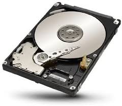
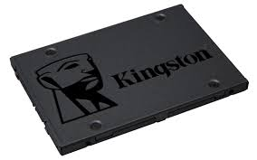

Debido a que la memoria RAM no puede almacenar nada sin energía y queremos poder apagar nuestra computadora de vez en cuando, necesitamos un medio de almacenamiento que conserve sus datos almacenados, incluso cuando la energía está apagada.
Hay 3 tipos principales de almacenamiento masivo:
El HDD

El SSD

El NVME SSD

Los tres hacen más o menos lo mismo, almacenan los datos por ti. La principal diferencia entre los tres es la velocidad.
Un HDD (que todavía tiene partes mecánicas móviles) es el más lento de los tres y normalmente leerá y guardará los datos a unos 100MByte/s.
Una SSD ya leerá y escribirá a unos 500MByte/s y una SSD NVME ya lee y escribe datos secuenciales con hasta 3500MByte/s.
Los discos duros como los SSD se conectan a un enchufe SATA en la placa madre a través de un cable SATA. También necesitan energía que reciben a través de un cable de alimentación de la fuente de alimentación, la SSD NVME, sin embargo, sólo se conecta directamente a la placa madre, es muy pequeña y no necesita cables adicionales.